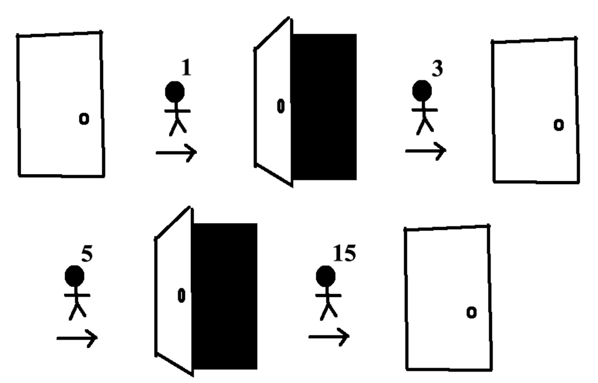
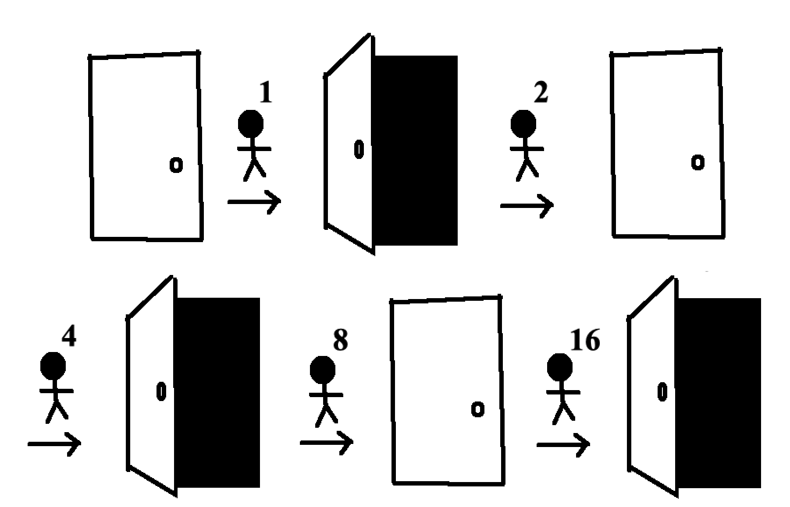

Seulement trente et un portes sont ouvertes à la fin: les portes 1, 4, 9, 16, 25, et tous les autres carrés parfaits moins qu'une mille. Pourquoi ce n'est que ces portes qui restent ouvertes?
En bref, pour n'importe quelle porte, \begin{align*} \text{la porte est ouverte à la fin} &\iff \text{la porte est appuyée un nombre de fois impair}\\ &\iff \text{le nombre de la porte a un nombre de facteurs impair}\\ &\iff \text{le nombre de la porte est un carré parfait.} \end{align*}
Pourqu'on voie comment le nombre de fois une porte est appuyée est pareil du nombre de facteurs pour son nombre, considerez ceux qui appuyent la Porte #15.
fig. 5 Les première, troisième, cinquième et quinzième personnes appuyent la Porte #15, en la laissant fermée.
La Porte #15 est appuyée quatre fois par les gens qui correspondent aux facteurs de 15 (1, 3, 5 et 15). En général, le nombre de fois une porte est appuyée c'est le nombre de facteurs pour le nombre de cette porte.
Maintenant considerez la Porte #16.
fig. 6 Les première, deuxième, quatrième, huitième et seizième personnes appuyent la Porte #16, en la laissant ouverte.
16 a cinq facteurs (1, 2, 4, 8 et 16). La plupart des nombres ont un nombre des facteurs pair, mais les carrés parfaits comme 16 sont des exceptions car un de leurs facteurs est une racine carrée.
Donc si une porte finit ouverte ou fermée c'est une question de si elle est appuyée un nombre de fois pair ou impair, ce qui est une question de ci le nombre de la porte a nombre de facteurs pair ou impair. Les carrés parfaits sont les seuls nombres avec un nombre de facteurs impair (car leurs racines carrées manque des facteurs associés). C'est la raison pour laquelle les trentes portes correspondant aux carrés parfaits finissent ouvertes dans ce problème.Voici tout ça plus formellemenent:
Proposition 1. La \(n^{ième}\) personne en ligne appuie sure la porte \(m\) si et seulement si \(n\) est un facteur de \(m.\)
Preuve: Soit \(n\in\mathbb{N}\) un facteur de \(m\in\mathbb{N}.\) Puis \(nk=m\) pour quelque \(k\in\mathbb{N}.\) Car la personne \(n\) appuie sur chaque \(n^{ième}\) porte, la \(k^{ème}\) porte sur laquelle la personne \(n\) appuie est la porte \(m\). Pour l'implication reciproque, soit \(n\) n'est pas un facteur de \(m\) et la personne \(n\) appuie sur la porte \(m\). Parce que la personne \(n\) n'appuie sur que chaque \(n^{ième}\) porte, il y a un \(k\) tel que \(nk=m.\) Ceçi contredit \(n\) n'etant pas un facteur de \(m\).
Proposition 2. Si une porte fermée est appuyée un nombre de fois pair elle finit fermée. Ainsi, si une porte est appuyée un nombre de fois impair elle finit ouverte.
Preuve: D'abord, on montre que si une porte fermée est appuyée un nombre de fois pair, elle finit fermée. Considérez une porte fermée. Supposez pour induction que appuyer sur la porte \(2k\) fois laisse la porte fermée pour n'importe quel nombre entier \(k.\) Alors appuyer sur la porte \(2(k+1)=2k+2\) fois laisse la porte fermée car la porte est fermée après \(2k\), ouverte après \(2k+1\) et finalement fermée après \(2k+2.\) Avec \(k=0\) comme base, la première partie de cette preuve est montrée par le raisonnement par induction.
Maintenant nous montrons que si une porte fermée est appuyée un nombre de fois impair, elle finit ouverte. Supposez qu'une porte fermée soit appuyée \(2m+1\) fois pour n'importe quel nombre entier \(m.\) Par la première partie de cette preuve, la porte est fermée après qu'elle est appuyée \(2m\) fois. Alors appuyer sur la porte encore la laisse ouverte.
Proposition 3. Si un nombre a un nombre de facteurs uniques impair, c'est un carré parfait.
Preuve: On procède par contraposition. Soit \(n\) un nombre entier qui n'est pas un carré parfait et soit \(S=s_1, s_2, \ldots, s_k\) l'ensemble des facteurs uniques de \(n\). Supposez pour contradiction que \(k\) soit impair. Puis il n'existe aucune partition de \(S\) en deux sous-ensembles de la même cardinalité. Alors \(n\) doit avoir un entier comme racine carrée, en refutant sa construction comme n'etant pas un carré parfait.
Par la proposition 1, le nombre de fois une porte \(m\) est appuyée est le même que le nombre de facteurs unique de \(m\). Puis par la proposition 2, la porte \(m\) est ouverte à la fin si et seulement si \(m\) a un nombre impair des facteurs uniques. Finalement par la proposition 3, la porte\(m\) finit ouverte si et seulement si \(m\) est un carré parfait.
\(\square\)
(Je remercie mon amie Maria qui nous a balancé ce problème pendant un voyage par la route et mon collègue Drew qui a trouvé la solution avant moi.)
27/06/19